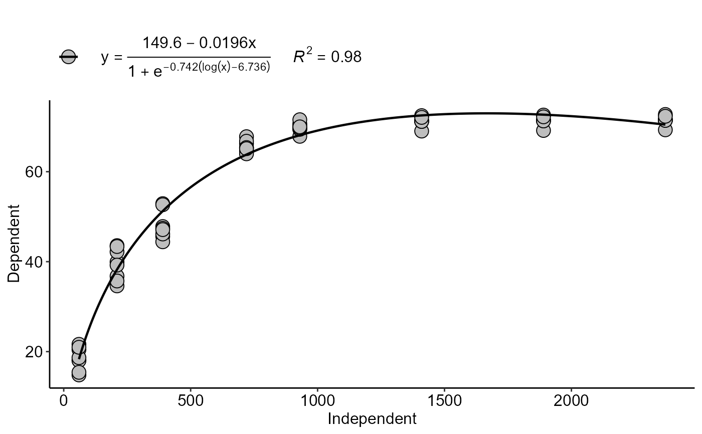

Analysis: Comparative models
comparative_model.RdThis function allows the construction of a table and/or graph with the statistical parameters to choose the model from the analysis functions.
comparative_model(models, names_model = NA, plot = FALSE, round.label = 2)Arguments
- models
List with objects of type analysis
- names_model
Names of the models
- plot
Plot in the parameters
- round.label
Round label plot
Value
Returns a table and/or graph with the statistical parameters for choosing the model.
Examples
library(AgroReg)
data(granada)
attach(granada)
#> The following objects are masked from granada (pos = 5):
#>
#> WL, time
#> The following objects are masked from granada (pos = 7):
#>
#> WL, time
#> The following objects are masked from granada (pos = 8):
#>
#> WL, time
#> The following objects are masked from granada (pos = 9):
#>
#> WL, time
#> The following objects are masked from granada (pos = 10):
#>
#> WL, time
#> The following objects are masked from granada (pos = 11):
#>
#> WL, time
a=LM(time,WL)
#>
#> $Coefficients
#> Estimate Std. Error t value Pr(>|t|)
#> (Intercept) 38.09951574 2.368997935 16.08254 8.438938e-24
#> trat 0.01888561 0.001875776 10.06816 1.146948e-14
#>
#> $values
#> Parameter values
#> 1 X Maximum 2370.00000
#> 2 Y Maximum 82.85842
#> 3 X Minimum 60.00000
#> 4 Y Minimum 39.23265
#> 5 AIC 499.58475
#> 6 BIC 506.06140
#> 7 r-squared 0.62000
#> 8 RMSE 11.44087
#>
#> $VIF
#> [1] NA
#>
#> [[4]]
#>
b=LL(time,WL)
#> $Coefficients
#>
#> Model fitted: Log-logistic (ED50 as parameter) with lower limit at 0 (3 parms)
#>
#> Parameter estimates:
#>
#> Estimate Std. Error t-value p-value
#> b:(Intercept) -1.058194 0.062275 -16.992 < 2.2e-16 ***
#> d:(Intercept) 79.599843 1.684582 47.252 < 2.2e-16 ***
#> e:(Intercept) 208.408451 12.445682 16.745 < 2.2e-16 ***
#> ---
#> Signif. codes: 0 '***' 0.001 '**' 0.01 '*' 0.05 '.' 0.1 ' ' 1
#>
#> Residual standard error:
#>
#> 3.340759 (61 degrees of freedom)
#>
#> $values
#> Parameter values
#> 1 X Maximum 2370.00000
#> 2 Y Maximum 73.95452
#> 3 X Minimum 60.00000
#> 4 Y Minimum 16.81271
#> 5 AIC 340.94490
#> 6 BIC 349.58043
#> 7 r-squared 0.96000
#> 8 RMSE 3.26152
#>
#> [[3]]
#>
c=BC(time,WL)
#> $Coefficients
#>
#> Model fitted: Brain-Cousens (hormesis) with lower limit fixed at 0 (4 parms)
#>
#> Parameter estimates:
#>
#> Estimate Std. Error t-value p-value
#> b:(Intercept) -0.7419957 0.0628497 -11.8059 < 2.2e-16 ***
#> d:(Intercept) 149.6381598 28.0542906 5.3339 1.539e-06 ***
#> e:(Intercept) 842.5975153 384.1847723 2.1932 0.032179 *
#> f:(Intercept) -0.0196017 0.0066143 -2.9635 0.004356 **
#> ---
#> Signif. codes: 0 '***' 0.001 '**' 0.01 '*' 0.05 '.' 0.1 ' ' 1
#>
#> Residual standard error:
#>
#> 2.642605 (60 degrees of freedom)
#>
#> $values
#> Parameter values
#> 1 X Maximum 1664.744745
#> 2 Y Maximum 72.976025
#> 3 X Minimum 60.000000
#> 4 Y Minimum 18.322780
#> 5 AIC 311.879606
#> 6 BIC 322.674022
#> 7 r-squared 0.980000
#> 8 RMSE 2.558691
#>
#> [[3]]

#>
d=weibull(time,WL)
#> $Coefficients
#>
#> Model fitted: Weibull (type 1) with lower limit at 0 (3 parms)
#>
#> Parameter estimates:
#>
#> Estimate Std. Error t-value p-value
#> b:(Intercept) -0.621433 0.051944 -11.963 < 2.2e-16 ***
#> d:(Intercept) 88.316674 3.466514 25.477 < 2.2e-16 ***
#> e:(Intercept) 135.558602 10.937572 12.394 < 2.2e-16 ***
#> ---
#> Signif. codes: 0 '***' 0.001 '**' 0.01 '*' 0.05 '.' 0.1 ' ' 1
#>
#> Residual standard error:
#>
#> 3.702133 (61 degrees of freedom)
#>
#> $values
#> Parameter values
#> 1 X Maximum 2370.000000
#> 2 Y Maximum 74.586891
#> 3 X Minimum 60.000000
#> 4 Y Minimum 16.801169
#> 5 AIC 354.091897
#> 6 BIC 362.727429
#> 7 r-squared 0.960000
#> 8 RMSE 3.614322
#>
#> [[3]]
 #>
comparative_model(models=list(a,b,c,d),names_model=c("LM","LL","BC","Weibull"))
#> AIC BIC R2 RMSE
#> LM 499.5848 506.0614 0.62 11.440874
#> LL 340.9449 349.5804 0.96 3.261520
#> BC 311.8796 322.6740 0.98 2.558691
#> Weibull 354.0919 362.7274 0.96 3.614322
#>
comparative_model(models=list(a,b,c,d),names_model=c("LM","LL","BC","Weibull"))
#> AIC BIC R2 RMSE
#> LM 499.5848 506.0614 0.62 11.440874
#> LL 340.9449 349.5804 0.96 3.261520
#> BC 311.8796 322.6740 0.98 2.558691
#> Weibull 354.0919 362.7274 0.96 3.614322